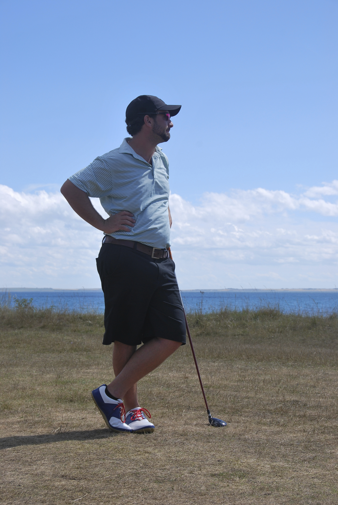

Profile

When people ask “How did you get into Golf Course Architecture?” I normally respond, “Hard work, and a lot of luck.” It is the truth, just simplified. My relentless pursuit of becoming an architect took me around the world, working on some great projects during the recent slow period for golf. Most architects I would write to when I was trying to break into the industry had just let go of employees, or had all of their work on hold. That's when I started to teach myself Chinese, learned how to operate heavy equipment, and soon enough everything changed. Somehow I managed to gain years of experience building golf courses when so many said it was virtually impossible.
My unlikely path has taken me from a boarding school honors project, to writing a Tillinghast thesis at Hobart College. In class I made golf course inspired silkscreens. After graduating, as a way to get construction experience, I spent 6-weeks at heavy equipment operating certification school in rural Virginia, and went to work on my first golf construction job a week later. I started most of my mornings for the next 2 years at 5-am renovating a number of courses in the NY-NJ region. Then at 25 years old opportunity knocked, and I got to build a golf course in the Sandhills of Nebraska, for Tom Doak. From there I moved on to building another new course for Doak, this time on an Island in China, and I haven’t looked back.
I founded Proper Golf in 2014 as it seemed like the best way to stay in the business. Starting Proper Golf has allowed me the ability to continue working for Renaissance Golf Design, while also allowing me the opportunity to pursue work on my own and with other architects, like Gil Hanse. For a young, and eager architect and shaper like myself, looking to make the leap into the next phase of my career, the last few years have allowed me to take my fascination with golf courses to a whole new level.
I have been really lucky to have the opportunity to take on projects of my own and help two of golf’s premier architects. Somehow I have managed to find the time to see hundreds of golf courses around the world along the way. I have counted my Doak Points, and read virtually all of the books on the subject. I was invited to serve on a panel for The Golf Hole Hall of Fame, and rate courses for a magazine. You can find my pictures in the USGA Architectural Archives, and Golf Architecture, the magazine, and more...
If nothing else I have worked tirelessly in building my career in architecture. There are only a handful of people my age with the same amount of experience building golf courses, or seen as many courses, and I am extremely proud of that. As a culmination of my travels, study, and work in golf construction and architecture, I have founded Proper Golf to continue building the thoughtful, fun, low impact and artistic golf I love so much.
Jaeger Kovich
Proper Golf